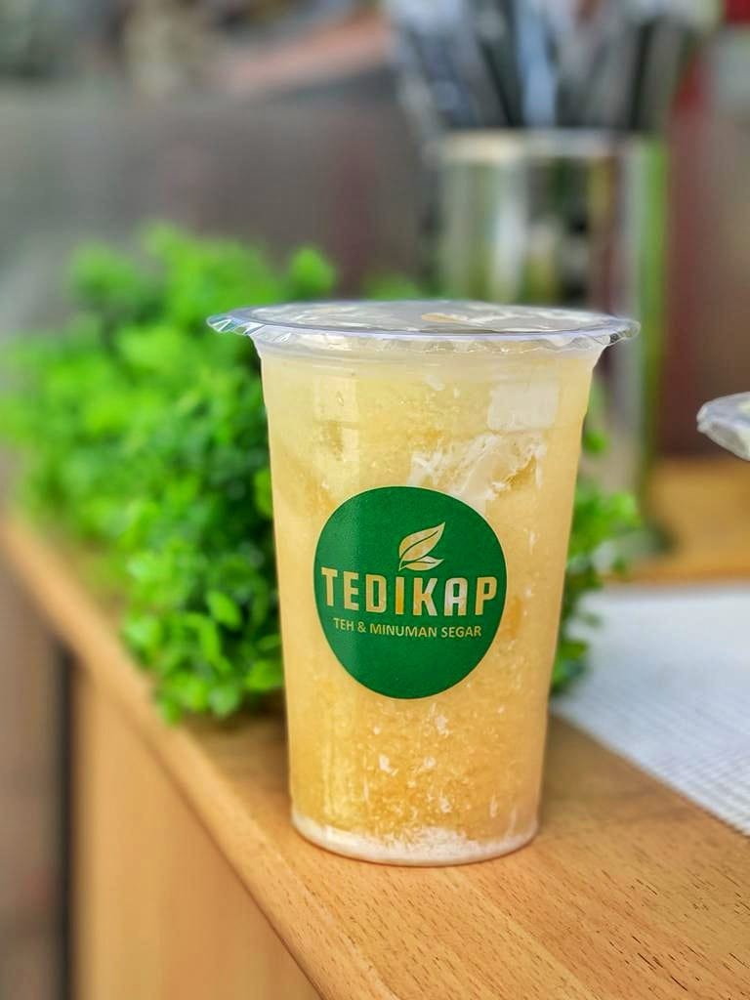
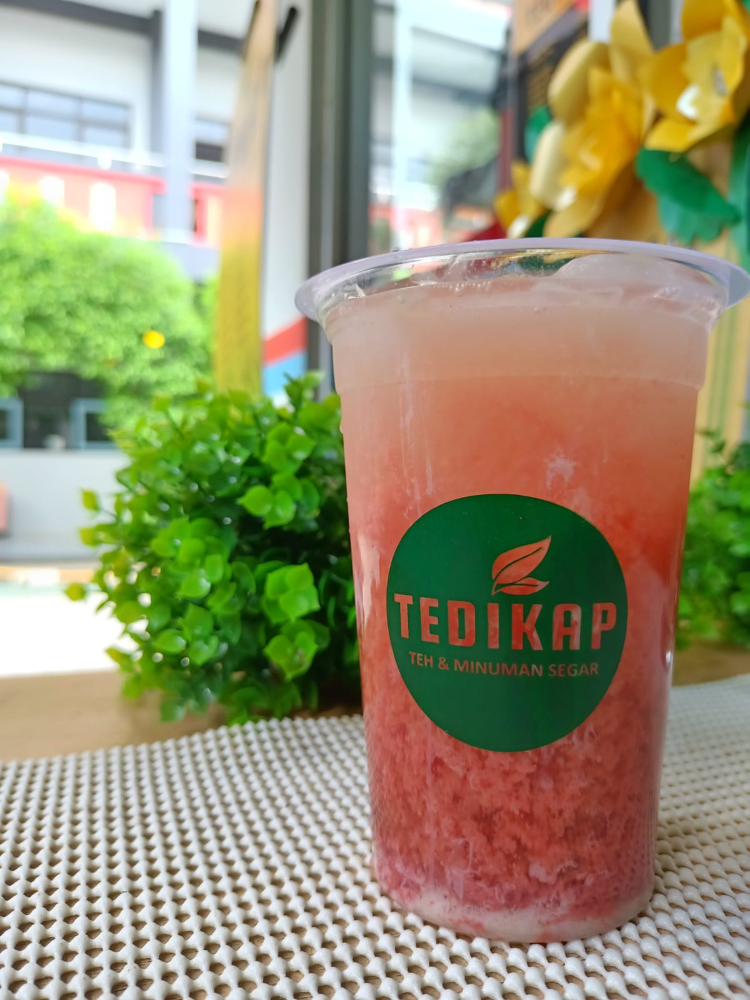

-
Healty Tea
Teh original Tedikap di tambahkan air jahe, seduhan sereh, perasan jeruk nipis, lemon, dan gula cair asli.
-
Lemonade
Perasan air lemon dan jeruk nipis yang basa di tambahkan dengan gula cair asli atau madu dan irisan buah lemon asli.
-
Lychee Tea
Perpaduan teh original Tedikap dengan air sirup lychee dan gula cair asli.
-
Strawberry Tea
Perpaduan teh original Tedikap dengan seduhan strawberry dan selai strawberry dengan gula cair asli.
-
Telang Tea
Seduhan bunga Telang asli yang di keringkan, di sajikan dengan perasan jeruk nipis dan lemon sebagai super drink dengan anti oksidan alami yang tinggi.
-
Vanilla Tea
Teh spesial Tedikap dengan sirup vanilla khusus.
-
Dark Chocolate
Dengan racikan spesial, Tedikap menghadirkan rasa dari Belgian Chocolate yang pekat dan sedikit pahit tapi tetap menyegarkan dan bisa nge-booster mood kamu.
-

Matcha
Racikan spesial dari ocha (teh hijau Jepang), krim dan susu yang di tambahkan Green Tea Tedikap dalam penyajian nya yang bisa bikin matcha kamu gak eneg tapi rasa tetep dapet.
-
Yakult Lychee
Perpaduan Yakult dan air sirup lychee di tambah dengan susu kental manis dijamin bikin segar.
-

Yakult Orange
Perpaduan Yakult dan air jeruk berbulir di tambah dengan susu kental manis dijamin bikin segar.
-

Yakult Strawberry
Perpaduan Yakult dan perasan air strawberry di tambah dengan susu kental manis dijamin bikin segar.
About Us
CEO : Ika Oktaviana
Tedikap pertama berdiri 22 September 2022. Di SMK Raden Umar Said. Kata Tedikap sendiri merupakan akronim dari kata "teh di cup". Yang terinspirasi dari teh botol dan teh kotak yang sudah sangat membekas di benak orang Indonesia pada umum nya. Yang digunakan juga sebagai slogan / tagline dari Tedikap, yang tertulis cup kemasan nya yang berbunyi: "Gak harus Tebotol atau Tekotak, Tedikap tetap segar dan bikin hari mu lebih mantap". Menu Tedikap merupakan menu racikan khusus yang sangat di upayakan semaksimal mungkin menggunakan bahan-bahan alami, terutama pada menu rempah nya.